Balladen – unheimliche Geschichten in Versen – Lesespurgeschichte mit Rätselaufgaben (Klasse 7)

Bodypercussion – Musik mit dem Körper – Lesespurgeschichte mit Rätselaufgaben (Klasse 1)

Bohren an der Ständerbohrmaschine – sicher und genau – Lesespurgeschichte mit Rätselaufgaben (Klasse 7)

Das Feuerzeug – Lesespurgeschichte mit Rätselaufgaben (Klasse 8)

Das Gericht – Lesespurgeschichte mit Rätselaufgaben (Klasse 9)

Das Gezeitenkraftwerk – Lesespurgeschichte mit Rätselaufgaben (Klasse 9)

Das Haus der Grundrechte – Lesespurgeschichte mit Rätselaufgaben (Klasse 9)

Das Kernkraftwerk – Lesespurgeschichte mit Rätselaufgaben (Klasse 9)

Das Kohlekraftwerk – Lesespurgeschichte mit Rätselaufgaben (Klasse 9)

Das Martinsfeuer – was ein Feuer braucht und wie man es löscht – Lesespurgeschichte mit Rätselaufgaben (Klasse 8)

Das Musical – Singen, Spielen, Tanzen – Lesespurgeschichte mit Rätselaufgaben (Klasse 8)

Das Nachrichtenstudio – Lesespurgeschichte mit Rätselaufgaben (Klasse 9)

Das Rathaus – Lesespurgeschichte mit Rätselaufgaben (Klasse 8)

Das Wasserkraftwerk – Lesespurgeschichte mit Rätselaufgaben (Klasse 8)

Das Windrad – Lesespurgeschichte mit Rätselaufgaben (Klasse 9)

Der 3D-Druck – In der Technik-Werkstatt – Lesespurgeschichte mit Rätselaufgaben (Klasse 9)

Der Ausbildungsvertrag – Probezeit, Urlaub, Rechte und Pflichten – Lesespurgeschichte mit Rätselaufgaben (Klasse 9)

Der Bundestag – Lesespurgeschichte mit Rätselaufgaben (Klasse 8)

Der Jahresrückblick – eine Radiosendung entsteht – Lesespurgeschichte mit Rätselaufgaben (Klasse 7)

Der Jugendrat entscheidet – Lesespurgeschichte mit Rätselaufgaben (Klasse 6)

Der Kaminofen – Verbrennung und Kohlenmonoxid – Lesespurgeschichte mit Rätselaufgaben (Klasse 8)

Der Kanon – eine Melodie, viele Stimmen – Lesespurgeschichte mit Rätselaufgaben (Klasse 3)

Der Landtag – Lesespurgeschichte mit Rätselaufgaben (Klasse 9)

Der Leserbrief – meine Meinung in der Zeitung – Lesespurgeschichte mit Rätselaufgaben (Klasse 8)

Der Malerbetrieb – Ein Praktikum beim Maler – Lesespurgeschichte mit Rätselaufgaben (Klasse 9)
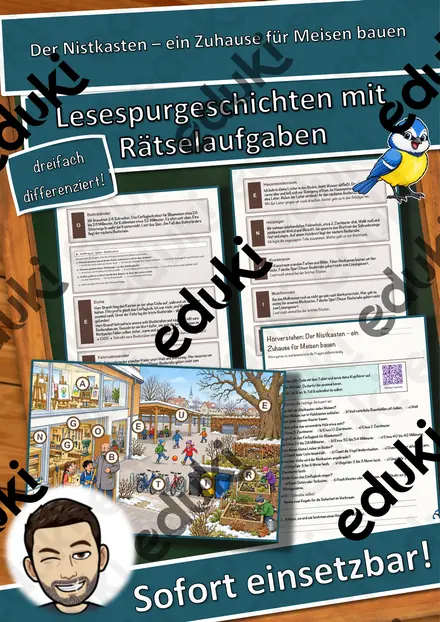
Der Nistkasten – ein Zuhause für Meisen bauen – Lesespurgeschichte mit Rätselaufgaben (Klasse 5)

Der Staudamm – Lesespurgeschichte mit Rätselaufgaben (Klasse 9)

Der Supermarkt – Ein Praktikum im Einzelhandel – Lesespurgeschichte mit Rätselaufgaben (Klasse 10)
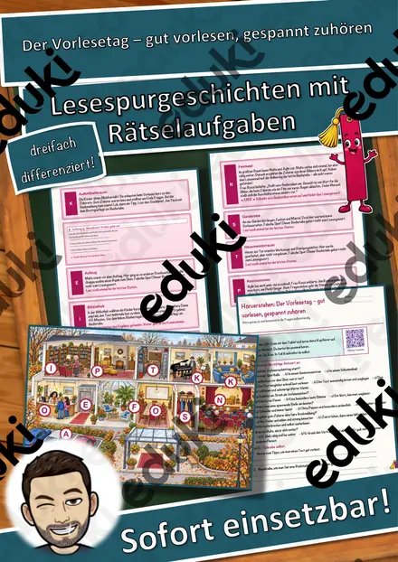
Der Vorlesetag – gut vorlesen, gespannt zuhören – Lesespurgeschichte mit Rätselaufgaben (Klasse 6)

Der Werkraum – Lesespurgeschichte mit Rätselaufgaben (Klasse 7)

Der erste Ferienjob – Jugendarbeitsschutz, Minijob und Lohn – Lesespurgeschichte mit Rätselaufgaben (Klasse 9)

Die Aluminiumhütte – Lesespurgeschichte mit Rätselaufgaben (Klasse 9)

Die Bewerbung – Anschreiben, Lebenslauf, Vorstellungsgespräch – Lesespurgeschichte mit Rätselaufgaben (Klasse 9)

Die Bibliothek – Lesespurgeschichte mit Rätselaufgaben (Klasse 7)

Die Bundestagswahl – Lesespurgeschichte mit Rätselaufgaben (Klasse 9)

Die Elektrowerkstatt – Ein Praktikum beim Elektroniker – Lesespurgeschichte mit Rätselaufgaben (Klasse 10)

Die Gleichnisse Jesu – verlorenes Schaf, barmherziger Samariter – Lesespurgeschichte mit Rätselaufgaben (Klasse 3)

Die Goldene Regel in den Religionen und Kulturen – Lesespurgeschichte mit Rätselaufgaben (Klasse 10)

Die Gärtnerei – Ein Praktikum beim Gärtner – Lesespurgeschichte mit Rätselaufgaben (Klasse 9)

Die Inventur – zählen, wiegen, vergleichen – Lesespurgeschichte mit Rätselaufgaben (Klasse 8)

Die Kaffeerösterei – Lesespurgeschichte mit Rätselaufgaben (Klasse 8)

Die Kfz-Werkstatt – Ein Praktikum beim Kfz-Mechatroniker – Lesespurgeschichte mit Rätselaufgaben (Klasse 9)

Die Oper – Musik, die Geschichten erzählt – Lesespurgeschichte mit Rätselaufgaben (Klasse 7)

Die Photovoltaikanlage – Lesespurgeschichte mit Rätselaufgaben (Klasse 9)

Die Schneiderei – Ein Praktikum beim Schneider – Lesespurgeschichte mit Rätselaufgaben (Klasse 9)

Die Schokoladenfabrik – Lesespurgeschichte mit Rätselaufgaben (Klasse 8)

Die Schreinerei – Ein Praktikum beim Tischler – Lesespurgeschichte mit Rätselaufgaben (Klasse 9)
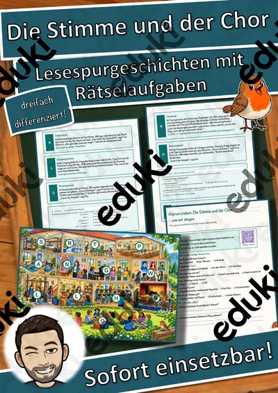
Die Stimme und der Chor – wie wir singen – Lesespurgeschichte mit Rätselaufgaben (Klasse 6)

Die Wahl in der Klasse – Lesespurgeschichte mit Rätselaufgaben (Klasse 5)

Die Windkraft – Lesespurgeschichte mit Rätselaufgaben (Klasse 8)

Die Windkraftanlage – Lesespurgeschichte mit Rätselaufgaben (Klasse 8)

Die Zeitungsredaktion – Lesespurgeschichte mit Rätselaufgaben (Klasse 8)

Die Ölmühle – Lesespurgeschichte mit Rätselaufgaben (Klasse 8)

Digitale Kunst – vom Pixel zur Projektion – Lesespurgeschichte mit Rätselaufgaben (Klasse 10)
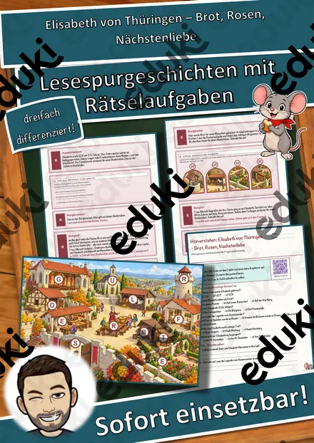
Elisabeth von Thüringen – Brot, Rosen, Nächstenliebe – Lesespurgeschichte mit Rätselaufgaben (Klasse 4)
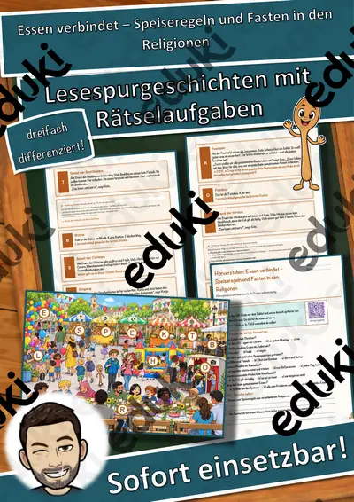
Essen verbindet – Speiseregeln und Fasten in den Religionen – Lesespurgeschichte mit Rätselaufgaben (Klasse 5)

Fair teilen und abgeben – Lesespurgeschichte mit Rätselaufgaben (Klasse 1)

Fast Fashion – der Weg einer Jeans – Lesespurgeschichte mit Rätselaufgaben (Klasse 8)

Fernöstliche Religionen – Lesespurgeschichte mit Rätselaufgaben (Klasse 9)
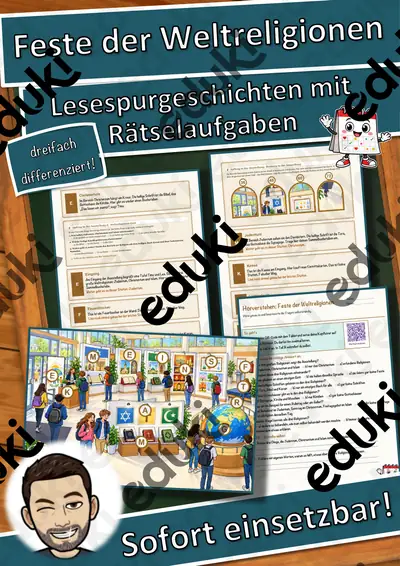
Feste der Weltreligionen – Lesespurgeschichte mit Rätselaufgaben (Klasse 5)

Glauben in Freiheit – Religionsfreiheit und Toleranz – Lesespurgeschichte mit Rätselaufgaben (Klasse 9)
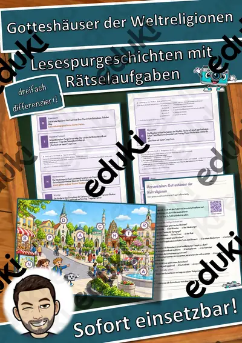
Gotteshäuser der Weltreligionen – Lesespurgeschichte mit Rätselaufgaben (Klasse 4)

Heilige Schriften der Weltreligionen – Lesespurgeschichte mit Rätselaufgaben (Klasse 7)

Herbstgedichte – reimen, vortragen, selbst dichten – Lesespurgeschichte mit Rätselaufgaben (Klasse 3)
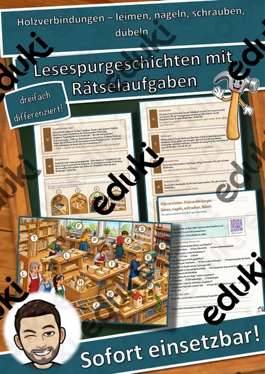
Holzverbindungen – leimen, nageln, schrauben, dübeln – Lesespurgeschichte mit Rätselaufgaben (Klasse 6)
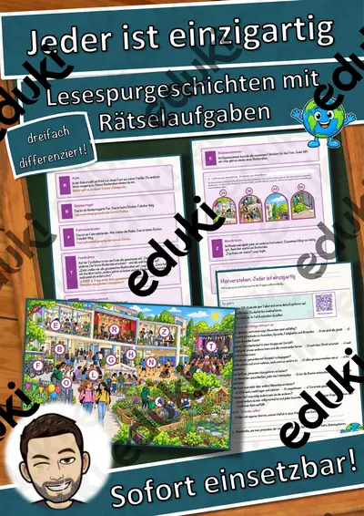
Jeder ist einzigartig – Lesespurgeschichte mit Rätselaufgaben (Klasse 6)

Kampfsport und Respekt – fair kämpfen nach Regeln – Lesespurgeschichte mit Rätselaufgaben (Klasse 8)

Karneval der Tiere – Musik aus dem Zoo – Lesespurgeschichte mit Rätselaufgaben (Klasse 1)

Kinderlieder und Spiellieder – Singen macht Spaß – Lesespurgeschichte mit Rätselaufgaben (Klasse 1)

Komponistinnen – Frauen in der Musikgeschichte – Lesespurgeschichte mit Rätselaufgaben (Klasse 9)

Kältebus und Wärmestube – Hilfe für wohnungslose Menschen im Winter – Lesespurgeschichte mit Rätselaufgaben (Klasse 9)

Lichterfeste in den Religionen – Diwali, Chanukka, Martinstag, Advent – Lesespurgeschichte mit Rätselaufgaben (Klasse 6)
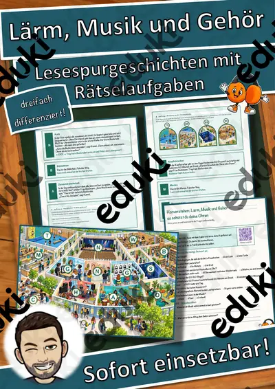
Lärm, Musik und Gehör – so schützt du deine Ohren – Lesespurgeschichte mit Rätselaufgaben (Klasse 6)

Löten – meine erste Schaltung – Lesespurgeschichte mit Rätselaufgaben (Klasse 8)

Materialpaket Advent und Winter für die 6. Klasse: 7 Lesespurgeschichten mit Rätselaufgaben (Weihnachtsbasar, Saturnalien, Lichterfeste & mehr)

Materialpaket Herbst-Lesespuren für die 3. Klasse: 7 Lesespurgeschichten mit Rätselaufgaben (Kürbis, Igel, Laterne, Halloween & mehr)
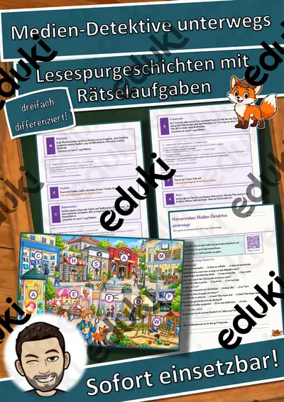
Medien-Detektive unterwegs – Lesespurgeschichte mit Rätselaufgaben (Klasse 3)

Mensch und Natur in den Religionen – Lesespurgeschichte mit Rätselaufgaben (Klasse 7)

Merkmale einer Kurzgeschichte – Lesespurgeschichte mit Rätselaufgaben (Klasse 7)

Metall formen – anreißen, sägen, feilen, biegen – Lesespurgeschichte mit Rätselaufgaben (Klasse 7)

Musik und Werbung – Jingle, Slogan, Klanglogo – Lesespurgeschichte mit Rätselaufgaben (Klasse 10)

Musikinstrumente der Welt – eine Reise durchs Museum – Lesespurgeschichte mit Rätselaufgaben (Klasse 3)

Musikvideos – wie Bild und Klang zusammenwirken – Lesespurgeschichte mit Rätselaufgaben (Klasse 9)

Online einkaufen – Widerrufsrecht, Fake-Shops und Rabattfallen – Lesespurgeschichte mit Rätselaufgaben (Klasse 8)

Paketflut im Advent – ein Tag im Paketzentrum – Lesespurgeschichte mit Rätselaufgaben (Klasse 8)

Pilgern – Reise zu heiligen Orten der Weltreligionen – Lesespurgeschichte mit Rätselaufgaben (Klasse 7)
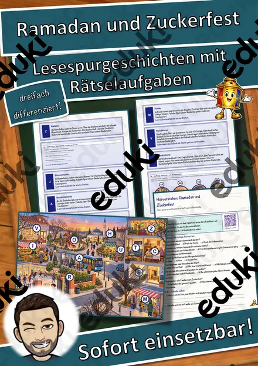
Ramadan und Zuckerfest – Lesespurgeschichte mit Rätselaufgaben (Klasse 4)
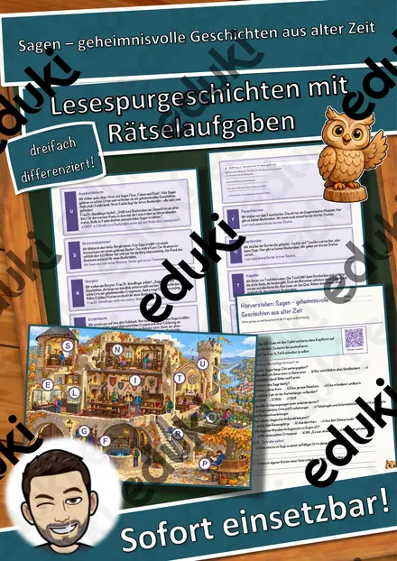
Sagen – geheimnisvolle Geschichten aus alter Zeit – Lesespurgeschichte mit Rätselaufgaben (Klasse 6)

Samba, Reggae & Co. – Musik aus Lateinamerika und der Karibik – Lesespurgeschichte mit Rätselaufgaben (Klasse 8)

Schlaflieder – Musik zum Träumen – Lesespurgeschichte mit Rätselaufgaben (Klasse 1)

Streaming und Urheberrecht – Geld, Rechte und Musik – Lesespurgeschichte mit Rätselaufgaben (Klasse 10)
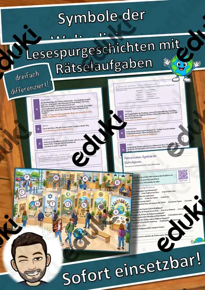
Symbole der Weltreligionen – Lesespurgeschichte mit Rätselaufgaben (Klasse 6)
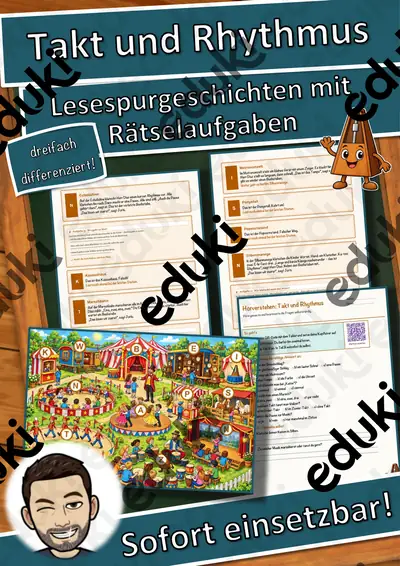
Takt und Rhythmus – Lesespurgeschichte mit Rätselaufgaben (Klasse 3)

Umtausch nach Weihnachten – Gewährleistung, Garantie und Kulanz – Lesespurgeschichte mit Rätselaufgaben (Klasse 8)
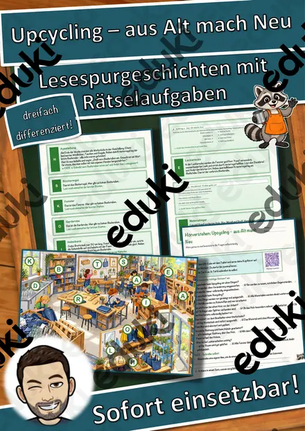
Upcycling – aus Alt mach Neu – Lesespurgeschichte mit Rätselaufgaben (Klasse 6)

Verantwortung in der digitalen Welt – Lesespurgeschichte mit Rätselaufgaben (Klasse 8)

Volksmusik in den Alpen – Jodeln, Hackbrett und Alphorn – Lesespurgeschichte mit Rätselaufgaben (Klasse 7)

Volkstanz und Tanzfest – Tänze im Takt – Lesespurgeschichte mit Rätselaufgaben (Klasse 3)
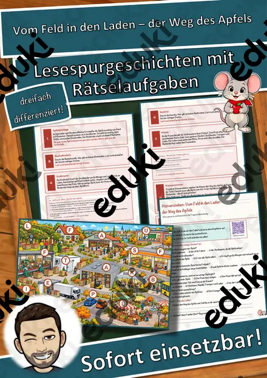
Vom Feld in den Laden – der Weg des Apfels – Lesespurgeschichte mit Rätselaufgaben (Klasse 5)

Warm eingepackt – wie Dämmung ein Haus schützt – Lesespurgeschichte mit Rätselaufgaben (Klasse 8)
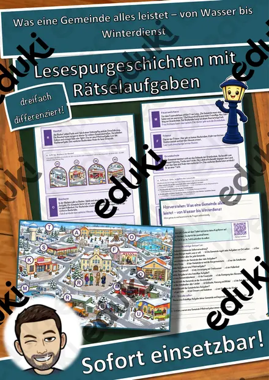
Was eine Gemeinde alles leistet – von Wasser bis Winterdienst – Lesespurgeschichte mit Rätselaufgaben (Klasse 6)

Weihnachtslieder – Musik im Advent – Lesespurgeschichte mit Rätselaufgaben (Klasse 3)

Wenn’s ernst wird – Katastrophenschutz in Deutschland – Lesespurgeschichte mit Rätselaufgaben (Klasse 7)

Werbung erkennen – wie sie wirkt und was dahintersteckt – Lesespurgeschichte mit Rätselaufgaben (Klasse 8)

Wichern und der Adventskranz – Hilfe für Kinder in Not – Lesespurgeschichte mit Rätselaufgaben (Klasse 7)

Winterklänge – Musik im Schnee – Lesespurgeschichte mit Rätselaufgaben (Klasse 1)

Wir helfen einander – Lesespurgeschichte mit Rätselaufgaben (Klasse 1)

Wünsche und Bedürfnisse – was ich wirklich brauche – Lesespurgeschichte mit Rätselaufgaben (Klasse 1)

Zusammen in der Klasse – Lesespurgeschichte mit Rätselaufgaben (Klasse 1)
Lesespurgeschichten im Fach Deutsch
Für den Deutschunterricht ist die Lesespur vor allem eine Übung im sinnentnehmenden Lesen. Der Text gibt die Information, die Aufgabe verlangt eine Entscheidung, und die Entscheidung ist nur richtig, wenn der Abschnitt verstanden wurde. Das macht Lesekompetenz sichtbar, ohne dass abgefragt wird.
Jede Geschichte liegt in drei Niveaustufen vor, die sich in Textlänge, Satzbau und Aufgabenanspruch unterscheiden. Weg, Stationen und Lösungswort bleiben gleich, sodass alle Fassungen gleichzeitig in einer Klasse laufen können.
Themen auf dieser Seite
Beispiele aus dieser Sammlung: Kinderlieder und Spiellieder · Die Windkraftanlage · Musikinstrumente der Welt · Schlaflieder · Musikvideos · Das Feuerzeug · Die Goldene Regel in den Religionen und Kulturen · Ramadan und Zuckerfest.